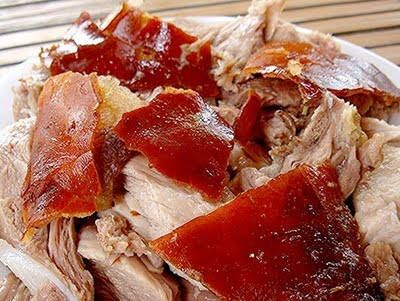

Lechon Recipe

Ingredients:
- 1 whole pig (around 30-35 lbs), cleaned and gutted
- 1/4 cup soy sauce
- 1/4 cup vinegar
- 1/4 cup vegetable oil
- 5 cloves garlic, minced
- 1 tbsp salt
- 1 tbsp black pepper
- 1 onion, quartered
- 1 bunch lemongrass, crushed
- 3-4 bay leaves
- 2 oranges, quartered
- 1/4 cup brown sugar
- 1/4 cup honey
- Banana leaves (optional, for wrapping)
Instructions:
- Prepare the pig by cleaning it thoroughly. Rub it inside and out with a mixture of soy sauce, vinegar, garlic, salt, and pepper.
- Stuff the pig's cavity with onions, lemongrass, bay leaves, and orange quarters. Tie it up securely.
- In a small bowl, mix brown sugar and honey. Brush the mixture onto the skin of the pig.
- Roast the pig over an open fire or in a large rotisserie for about 4-6 hours, turning occasionally to ensure even cooking.
- If using, wrap the pig in banana leaves during the last hour of cooking to enhance flavor.
- Once cooked, remove from the fire and let it rest for a few minutes before carving. Serve with your favorite dipping sauces. Enjoy!
Back to Menu